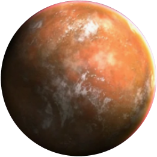

Ситхи
Описание
Воины темной стороны силы. Используют красные мечи.
Силы и способности
Темная сторона силы открывает для воина огромный спектр атакующих
способностей.
Планета происхождения

Корибан
Ситхи
Описание
Воины светлой стороны силы. Используют мечи синего или зеленого цвета.
Силы и способности
Светлая сторона силы, позволяет джедаям использовать способности контроля и
защит.
Планета происхождения
Тайтон
Star Wars
Давным давно в далекой делаекой галактике зародилась сила. И появились люди, способные эту силу чувствовать и использовать ее. Их назвали форс юзеры.
В последствии разделились они на 2 учения. Одни назвались “джедаями” и представляли светлую сторону силы. Во главу они ставили силу разума над эмоциями.
Другие же- Ситхами. Ситхи используют темную сторону силы. Для них эмоции - это ключ. Ключ к силе и все их способности основываются на эмоциональной энергии.